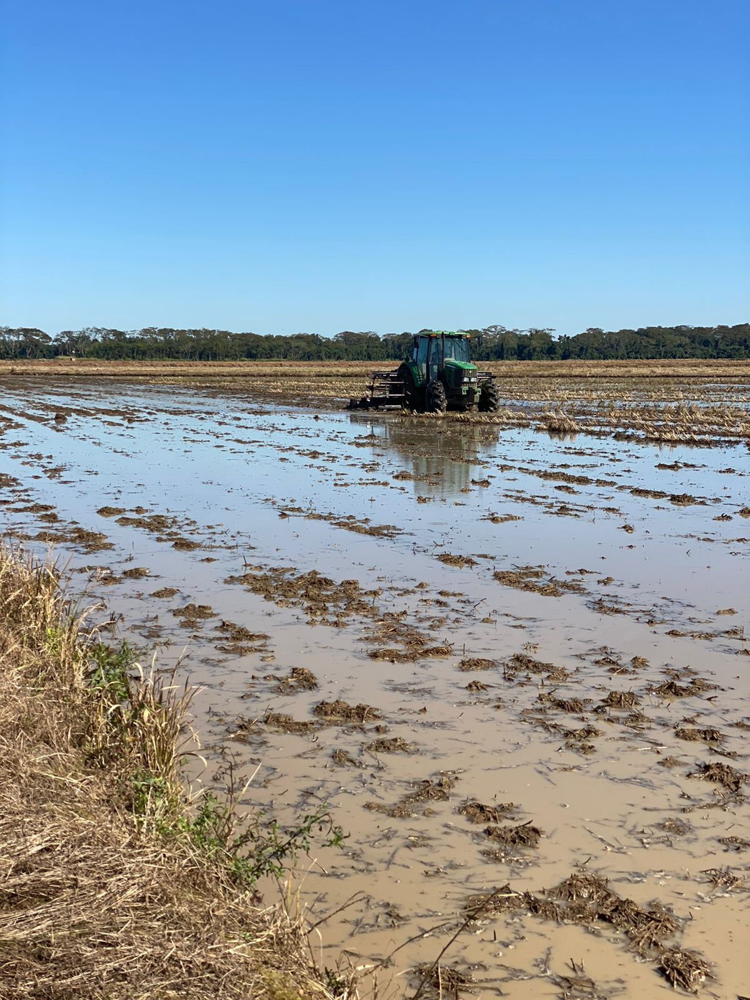
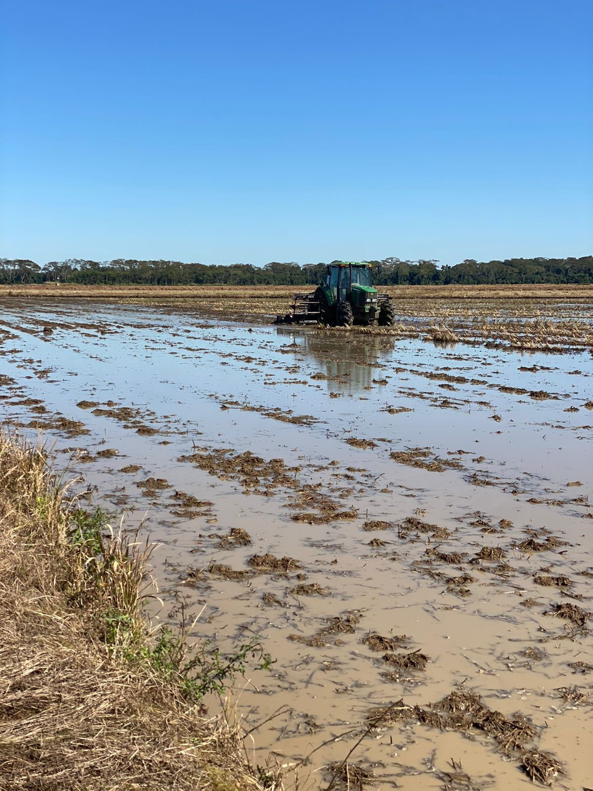
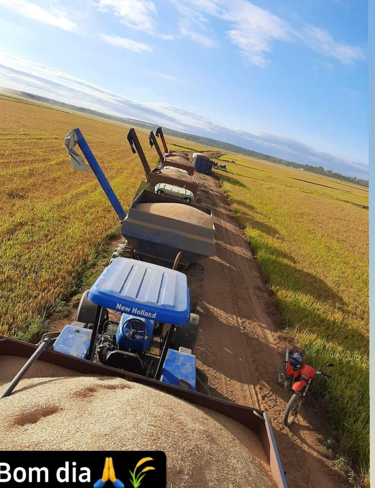
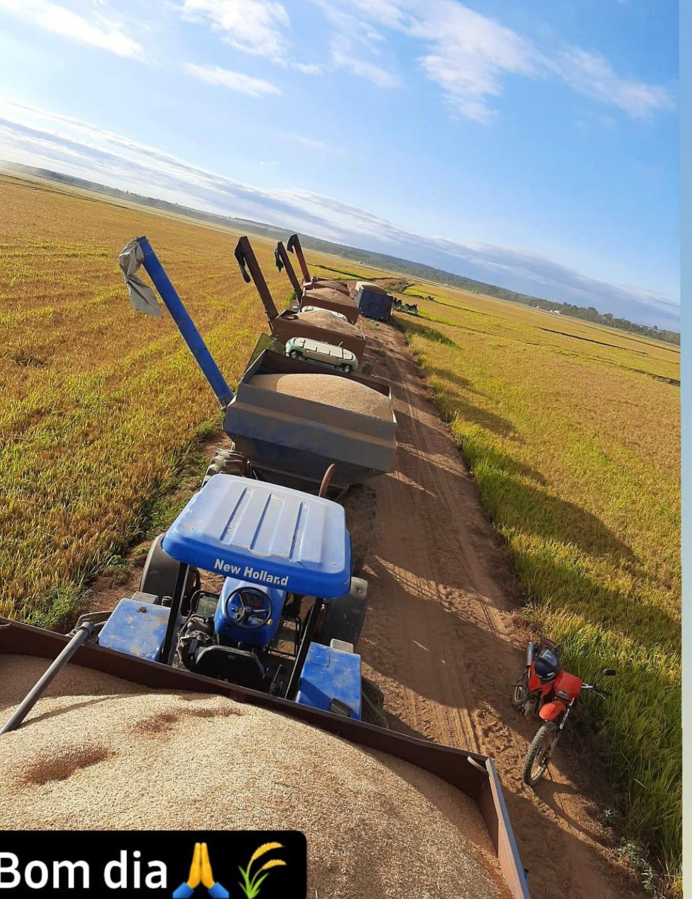

Agricultura de São José do Ivaí
Distrito de Santa Isabel do Ivaí, São José do Ivaí mais conhecida popularmente como 28 esta localizada na BR PR-182, e o CEP 87913-000 e descrita por seus visitantes como um lugar calmo e acolhedor.
Nosso objetivo: Divulgar um pouco da nossa principal riqueza que é a agricultura.
Assim divulgando o trabalho de pequenos e grandes agricultores.


 



 
